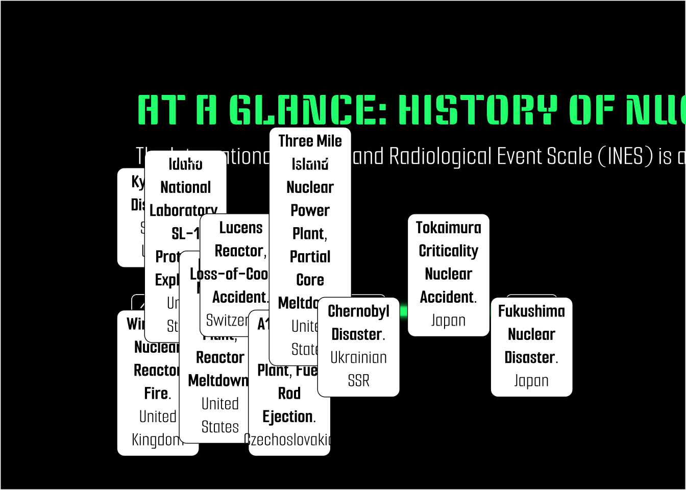

# Load libraries
library(here)
library(dplyr)
library(ggplot2)
library(janitor)
library(sf)
library(scico)
library(tidyverse)
library(htmltools)
library(ggrepel)
library(scales)
library(stringr)
library(tmap)
library(lubridate)
library(ggimage)
library(ggtext)
library(sysfonts)
library(magick)
library(showtext)Assignment 3 (HW #3)
Nuclear Energy Infographic
Assigned Tue 02/11/2025 | Due Tue 02/25/2025
Questions
Which option do you plan to pursue? I plan to create an infographic, I have not changed my mind.
Restate your question(s). Has this changed at all since HW 1? If yes, how so? My main question is: “A History of Nuclear Accidents: Are costs of nuclear energy worth its benefits?”.
The main question has changed since HW1 because of the data available online. I initially wanted to answer an iteration of this question but specifically focused on non-financial costs of nuclear power. Subsequently, one of my data viz would summarize a post-Chernobyl human health study on thyroid cancer, but the data is not available to the public (since I can’t make a data viz about it, I will incorporate this information as annotations within the infographic instead). What is widely available (relatively) is data on soil, air and water concentrations of radionuclides in areas where major nuclear disasters have occurred.
Given the data that I’ve found, my 3 sub-questions will likely be: - How common are nuclear disasters? - How widespread and pervasive is soil contamination after a nuclear disaster? - What are the long-term effects of radiation exposure on wildlife?
I am having a hard time determining which variables I want to focus on because I keep rethinking my data viz choices!
Examples I am using as inspiration:
Enable showtext_auto()
# enable showtext
showtext_auto()Load fonts
font_add_google(name = "Keania One", family = "ko")
font_add_google(name = "Smooch Sans", family = "ss")# paths
cooling_tower_path <- here("examples","cooling_tower.jpg")
france_path <- here("examples","france.png")
waste_path <- here("examples","waste.jpg")
knitr::include_graphics(cooling_tower_path)
knitr::include_graphics(waste_path)
knitr::include_graphics(france_path)
Load data
chernobyl_exposure <-read.csv(here("data","chernobyl_exposure_distance.csv")) %>%
clean_names()
nuclear_accidents <- read.csv(here("data","nuclear_accidents.csv") ) %>%
clean_names() Wrangle nuclear accidents data
# filter to INES levels of interest
nuclear_accidents <- nuclear_accidents %>%
filter(ines_level >= 4) %>% # filter to accidents of INES level 4-7
filter(!is.na(ines_level)) %>% # drop if ines_level = NA
mutate(description = paste(incident, location, sep = ",\n "))
# make "date" col into date object, set "orders" to all possible date formats in the df
nuclear_accidents$date <- year(as.Date(parse_date_time(nuclear_accidents$date, orders = c("m/d/Y","d/m/Y"))))# world <- ne_countries(scale = "medium", returnclass = "sf") %>%
# filter(continent %in% c("North America","Asia","Europe"))
#
# relevant_countries <- world %>%
# filter(name %in% c("United States of America","Russia","Ukraine","Germany","Switzerland","Czechia","Sweden","Japan","Hungary","France","Spain"))
# # reorder lat and long cols before st_as_sf transformation
# nuclear_accidents <- nuclear_accidents %>%
# relocate(longitude,latitude) %>%
# filter(!is.na(ines_level)) # drop if ines_level = NA, means accident too small to have level assigned
#
# # transform df to sf
# nuclear_accidents_sf <- st_as_sf(nuclear_accidents, coords = c("longitude", "latitude"), crs = 4326)# # testing a map as data viz
# tmap_mode("plot")
#
# map <-tm_shape(world) +
# tm_polygons(col = "gold2",
# border.col = "grey13",
# popup.vars = NULL) +
# tm_shape(nuclear_accidents_sf) +
# tm_text("incident",
# size = 0.7,
# col = "black",
# auto.placement = TRUE,
# shadow = TRUE) +
# tm_bubbles(size = 1,
# col = "ines_level",
# palette = rev(scico(n = 7, palette = "roma"))) +
# tm_layout(bg.color = "lightblue")
#
#
# map
# # add nuclear symbol to df
nuclear_accidents$image <- rep(c(here("samples","nuclear_symbol.png")), 10)
# name background image object
background <- "https://miro.medium.com/v2/resize:fit:4800/format:webp/1*hL391IqaaorQv-c5-a5w-w.jpeg"
# heights for milestones.
nuclear_accidents$positions <- c(0.15, -0.1, 0.1, -0.1, .1, -.1, .1, -.1, .1, -.1)
# set the directions for each accident, aka above and below timeline
nuclear_accidents$directions <- c(1, -1) timeline <- ggplot(nuclear_accidents, aes(x = date, y = positions, label = description)) +
theme_classic() +
# horizontal timeline
geom_hline(yintercept = 0,
color = "springgreen",
alpha = 0.9,
linewidth = 4,
show.legend = FALSE) +
# lines conencting accident to timeline
geom_segment(data = nuclear_accidents, aes(y = positions,
yend = 0,
xend = date),
color = "white",
show.legend = FALSE) +
# year labels on timeline
geom_label(aes(x = date,
label = date,
y = 0),
fill = "black",
color = "white",
family = "ss",
size = 7,
show.legend = FALSE) +
geom_point(aes(y = positions), size = 1) +
# imagine to replace data points
# geom_image(image = nuclear_accidents$image[1],
# size = 0.4,
# nudge_x = -0.025) +
# text boxes that are html friendly, accident description
geom_textbox(aes(label = str_wrap(
paste0("<b><span style='color:black;'>",incident,".</b>", tags$br(), location))),
fill = "white",
color = "black",
size = 6,
family = "ss",
halign = 0.5,
valign = 0.5,
show.legend = TRUE
) +
# guides(fill = guide_legend(title = "INES Level", position = "bottom"),
# override.aes = list(size = 5)) +
#
labs(title = "AT A GLANCE: HISTORY OF NUCLEAR ACCIDENTS",
subtitle = "The International Nuclear and Radiological Event Scale (INES) is a logarithmic scale with 7 levels. Levels 4-7 are reserved for high-impact accidents") +
theme(
plot.title = element_text(family = "ko",
margin = margin(t = 0, r = 0, b = 10 , l = 0, unit = "pt"),
size = 30,
color = "springgreen"),
plot.subtitle = element_text(family = "ss",
face = "bold",
size = 18,
color = "white",
margin = margin(t = 0, r = 0, b = 30 , l = 0, unit = "pt")),
plot.title.position = "plot",
axis.text.y = element_blank(),
axis.title.y = element_blank(),
axis.line.y = element_blank(),
axis.text.x = element_blank(),
axis.ticks = element_blank(),
axis.title.x = element_blank(),
axis.line.x = element_blank(),
legend.text = element_text(color = "black"),
# legend.direction = "horizontal",
# legend.position = "bottom",
panel.background = element_rect(fill = "hotpink4"),
plot.background = element_rect(fill = "hotpink4"),
plot.margin = margin(t = 60, r = 50, b = 50, l = 50, unit = "pt")) +
coord_cartesian(clip = "off")
# timeline <- ggbackground(timeline, background, alpha = 0.1)
ggsave("timeline.png",
plot = timeline,
device = "png",
width = 10,
height = 12,
units = "cm",
dpi = 300
)
timeline 